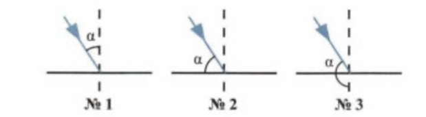
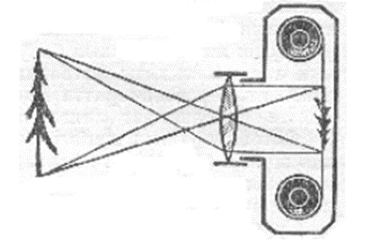

1. Жылулық жарық көздерінің суықтан айырмашылығы неде?
2. Күннің тұтылуы қандай жағдайда болады?
3. Жарық таралатын сызық қалай аталады?
4. Шуақты күнде жердегі көлеңкенің ұзындығы 1,5 м шыршадан 80 см, ал қайыңнан – 8 м. қайыңның биіктігі
қандай?
5. Шуақты күнде үйден жердегі көлеңкенің ұзындығы 35 м, ал биіктігі 1 м тік тұрған таяқшадан көлеңкенің
ұзындығы 2 м. үйдің биіктігі қандай?
6. Сәуленің түсу бұрышы 45°. Шағылу бұрышын табыңыз.
7. Жазық айна мен шағылған сәуле арасындағы бұрыш 60°-қа тең. Сәуленің түсу бұрышын табыңыз.
8.Егер түсу бұрышы 15° төмендесе, түсу мен шағылысқан сәулелер арасындағы бұрыш қанша өзгереді?
9. Суреттерде жарық сәулесінің түсу бұрыштары көрсетілуі керек. Бұл суреттердің қайсысы дұрыс?

10. Жарық сәулесі айнаның бетіне 85° бұрышпен түседі. Түскен және шағылған сәулелер арасындағы бұрыш неге
тең? Шағылу бұрышы неге тең?
11. Жарық сәулесі әйнектен судың бетіне 40° бұрышпен түседі. Сыну бұрышын анықтаңыз.
12. Су-әйнек ортасының шекарасына жарық сәулесі 40° бұрышпен түседі. Сәуленің сыну бұрышын анықтаңыз.
13. Жарық сәулесі екі ортаның шекара жазықтығына түседі. Түсу бұрышы 50°, шағылған сәуле мен сынған сәуле
арасындағы бұрыш 100°. Сыну бұрышы неге тең?
14.Шағылысқан және сынған сәулелер арасындағы бұрыш 110°. Түсу және сыну бұрыштарының қосындысы қандай?
15. Терезе әйнегіне жарық сәулесі түсіп, әйнек жазықтығымен 25° бұрыш жасайды. Шыныдан шағылған және
әйнектен өткен сәуленің арасындағы бұрыш қандай болады?
16. Егер айналар арасындағы бұрыш 90° болса, айнадағы кескіндер саны?
17. Егер айналар арасындағы бұрыш 45° болса, айнадағы кескіндер саны?
18. Сфералық айна формуласы
19. Ойыс айнада зат қай кезде кескін бермейді?
20. Дөңес айнада зат кескіні қандай болады?
21. Заттың биіктігі 2см. Биіктігі 1м кескін алу үшін, экраннан 4м қашықтықта орналасқан линзаның фокустық
қашықтығы қандай болу керек?
22. Оптикалық күші 2,5 дптр болатын линза жарықтандырылған заттан 0,5 м қашықтықта орналастырылды. Заттың
айқын бейнесін көру үшін экранды қандай қашықтықта орналастыру керек?
23. Биіктігі 3 см болатын зат жинағыш жұқа линзадан 40 см қашықтықта орналасқан. Линзаның оптикалық күші
4 дптр-ға тең болса, кескіннің биіктігін анықтаңыз.
24. Дененің кескіні линзадан 30 см қашықтықта пайда болды. Егер линзаның оптикалық күші 4 дптр екені
белгілі болса, сызықтық ұлғаюды табыңыз.
25. Жұқа линза формуласы
26. Адамның көзіне ұқсайтын қандай оптикалық аспап бар?
27. Оқушы оптикалық күші +2 дптр болатын көзілдірік тағады. Көзілдіріктің фокустық арақашықтығы қандай?
28. Суреттегі камера қандай сурет береді?

29. Дәрігер Арманға оптикалық күші -1 дптр болатын көзілдірік тағуды ұсынды. Арманның көзінде қандай ақау
бар?
30.Жинағыш линзасы бар көзілдірік қандай көздің ақауын жөндейді?